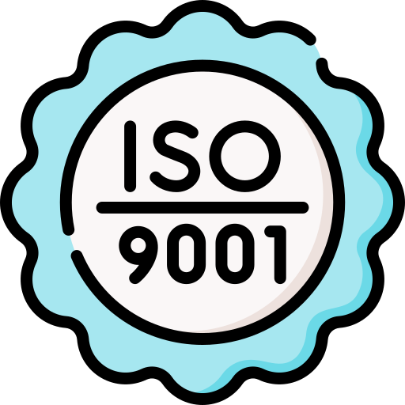

Historia de la Empresa
Distriquímicos fue fundada en 2015 por un grupo de expertos en química con el propósito de ofrecer soluciones químicas de alta calidad a diversas industrias. Comenzamos como un pequeño distribuidor en el mercado local, y gracias a nuestro compromiso con la excelencia y el servicio al cliente, hemos crecido hasta convertirnos en un proveedor líder en el sector. Hoy en día, servimos a clientes en todo el país, ofreciendo una amplia gama de productos químicos para diferentes aplicaciones.
Misión
En Distriquímicos, nuestra misión es suministrar productos químicos de alta calidad que impulsan la eficiencia y sostenibilidad en la industria. Nos comprometemos a ofrecer soluciones innovadoras y seguras que satisfagan las necesidades de nuestros clientes, fomentando relaciones duraderas basadas en confianza y excelencia.
Visión
Aspiramos a ser líderes en la distribución de productos químicos en el mercado latinoamericano, reconocidos por nuestro enfoque en la calidad, seguridad y responsabilidad ambiental. Nuestro objetivo es contribuir al desarrollo sostenible de la industria, ofreciendo productos que promuevan un futuro más limpio y seguro para todos.
Valores
Responsabilidad: Promovemos prácticas responsables y sostenibles en la distribución de productos químicos, priorizando la seguridad y el impacto ambiental.
Calidad: Nos comprometemos a ofrecer productos químicos que cumplan con los más altos estándares de calidad y seguridad.
Servicio: Valoramos a nuestros clientes y nos esforzamos por brindar un servicio excepcional, adaptado a sus necesidades específicas.
Innovación: Buscamos constantemente nuevas soluciones y productos para mantenernos a la vanguardia del sector químico.
Objetivos
En Distriquímicos, nos enfocamos en expandir nuestra oferta de productos, mejorar continuamente nuestros procesos de distribución y fortalecer nuestras relaciones con clientes y proveedores. Buscamos ser el socio confiable para todas las necesidades químicas de nuestros clientes, proporcionando soluciones efectivas y de alta calidad.
Certificaciones y premios
Estamos orgullosos de contar con certificaciones de calidad como ISO 9001 y hemos recibido el reconocimiento por nuestro compromiso con la seguridad y la excelencia en el servicio.
